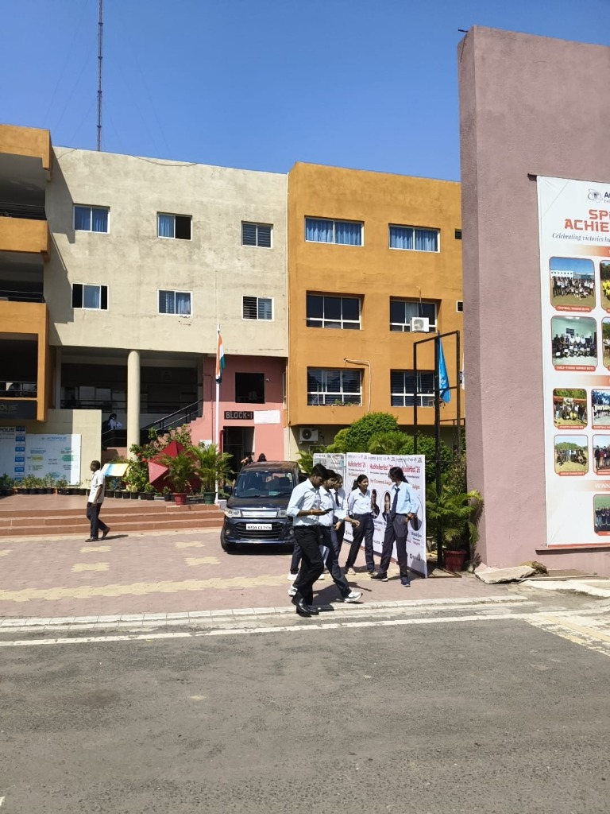
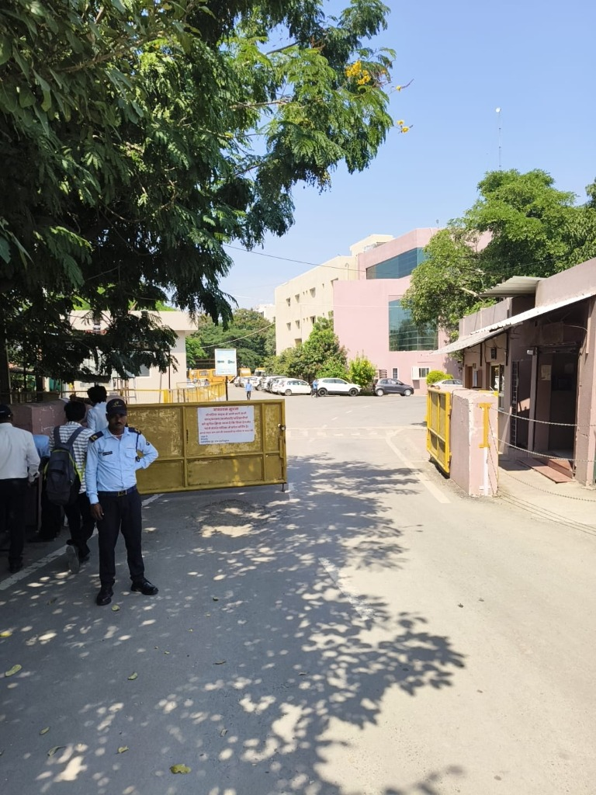

Never get lost on AITR Campus again.
Intelligent campus navigation built for Acropolis Institute of Technology & Research. Find labs, departments, classrooms, offices, and facilities with real photo landmarks and turn-by-turn directions.

Campus Map & Route Planner
AITR Photo-Guided Walking Tour
Experience the exact walking journey from the Main Gate to the academic blocks.

Start Point1. Main Campus Gate
Primary security entrance with guard cabin, gate barrier, and guidelines board.
Explore All 17+ AITR Locations
Engineered for First-Day Confidence
The Real Problem
New students and visitors face anxiety finding unfamiliar blocks, admission offices, computer labs, and department desks across large multi-acre campuses.
The Photo-Guided Solution
CampusNav AI combines calibrated satellite layout mapping with ground-level sequential photos, allowing students to recognize physical landmarks with zero confusion.
Natural Language AI
Students don't need to memorize room numbers. Simple queries like "Where is the library?" or "Find nearest food" instantly resolve to verified locations and routes.
Zero Dependencies
Built purely with lightweight, accessible standards (HTML5/CSS3/Vanilla JS) for instant load times even on low-bandwidth mobile connections across campus.